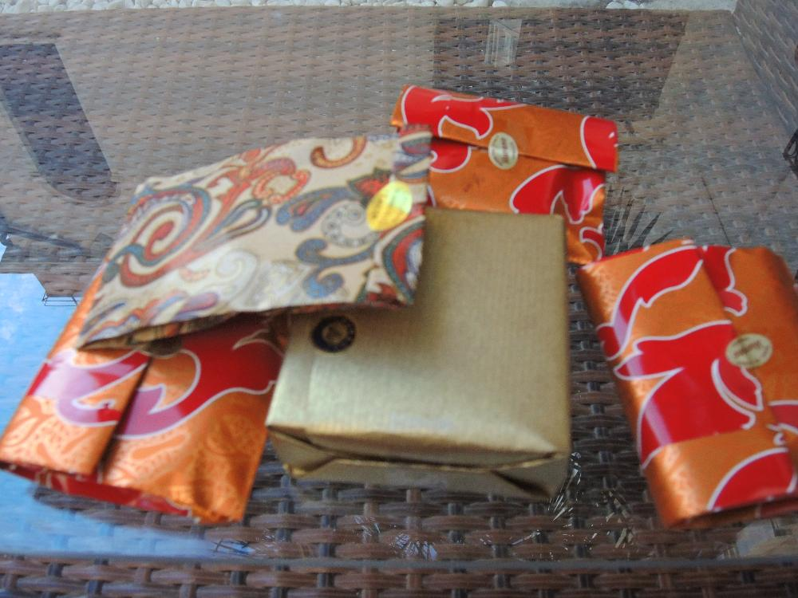

Венеция. Остров Мурано.Третий день.
18.06.2014
На остров Мурано когда-то выселили стеклодувов, из-за большого количества учиненных ими пожаров.
С тех пор остров всемирно известен своим стекольным производством.

18.06.2014
На остров Мурано когда-то выселили стеклодувов, из-за большого количества учиненных ими пожаров.
С тех пор остров всемирно известен своим стекольным производством.
С утра, легко второй раз позавтракав макароннами с морепродуктами по нашему, а по их Pasta with seafoods, мы отправились на остров
Я серъезен
Потому что у нас в команде есть кому веселиться
В самом центре Мурановки находится стеклянная здоровенная фиговина с которой все фоткаются
Наташины фото-ухищрения для попадания двоих в кадр, если один из них фотограф
Под дубом дремлется чудно
 Мурановские стелянные украшеньица
Это оранжевое пойло называется шприц или сприц. Его хлещет вся венецианская молодежь и стародешь. Мы тоже решили попробовать - не особо в восторге. Напоминает блейзер со льдом - это я для помнящих сей замечательный напиток людей. Вообщем лучше как-то по-дедовски пить винище.
Вот как раз и винище с конфетосами на набережной неизвестного канала.
А вот кому-то уже достаточно винища
Нежданно пошел дождяра. Самые бояки спрятались. Самые храбрые фоткают.
А вот и главорю группы достаточно вина.
...